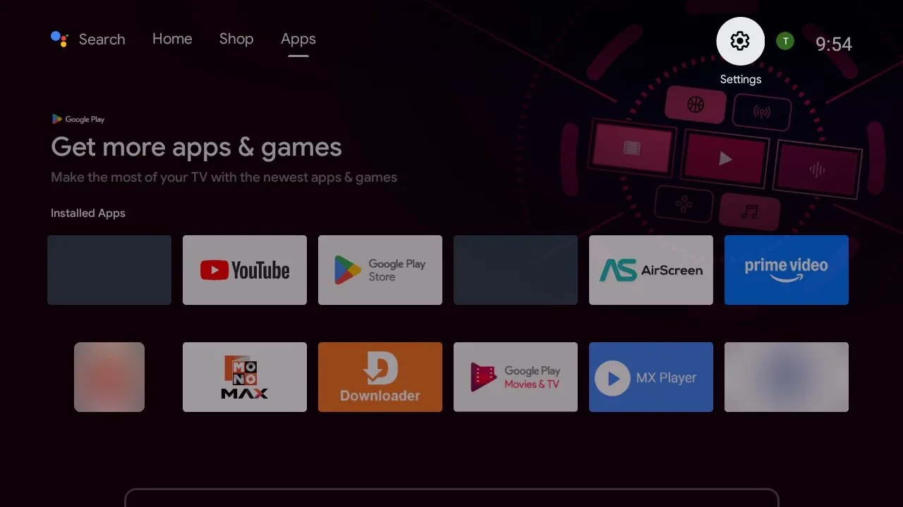
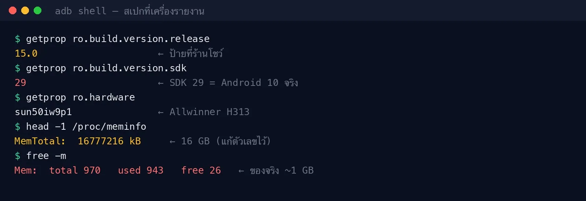
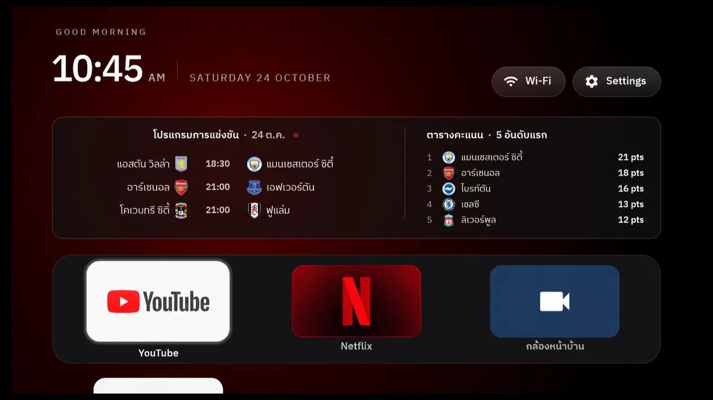
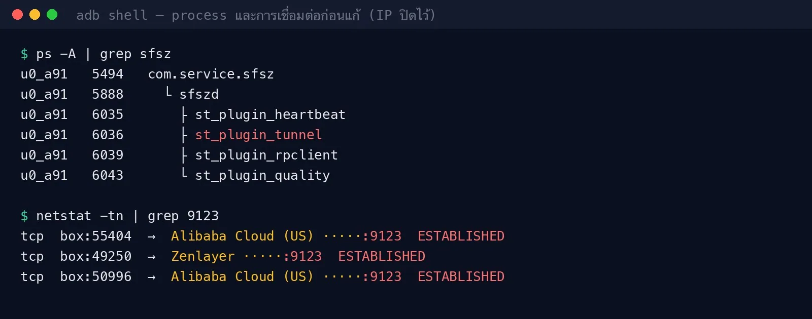
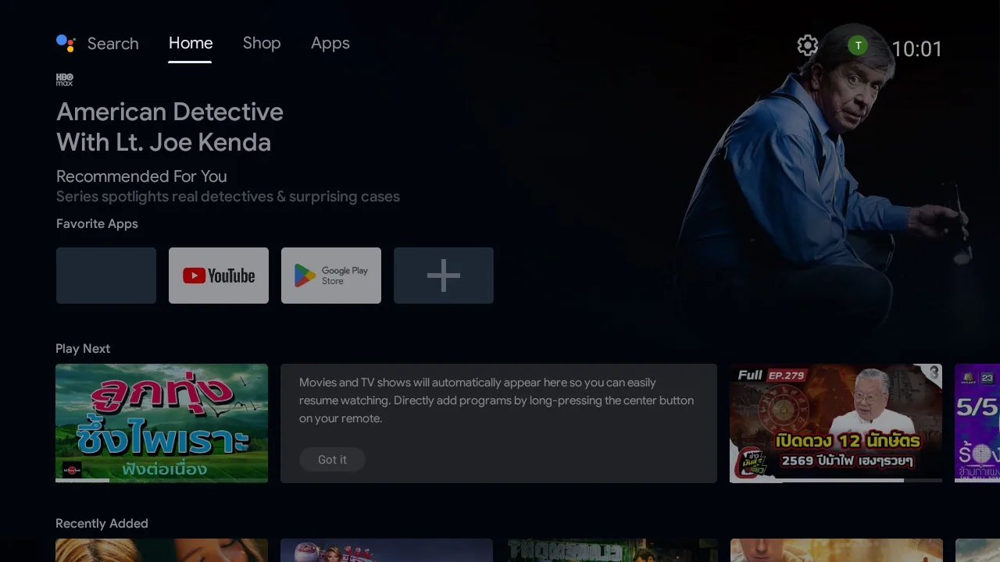

TX98 TV Box — from malware to a home screen we use
From a cheap box that lied about its specs and secretly sold the home connection, to a TV that opens to the 3 buttons the family actually uses. No root, and every step can be undone.

It started with removing what was unsafe from an Android TV box, then designing a new experience that opens straight to YouTube, Netflix, the front door camera and the football data the family wants to see
The family uses a handful of things, but the screen offers dozens
Ever opened Netflix to watch one film and spent 20–30 minutes scrolling through options before picking something? That is almost half a movie gone. The problem is not a lack of things to watch. There is so much that choosing becomes a chore of its own.
This TV box's home screen worked the same way. The family turns it on to watch YouTube or Netflix or to check the front door camera, but first they get past ads, apps nobody uses and close to ten options before reaching what they want. More options did not make it more useful. It added time and hesitation every time the TV came on.

I just want the 3–4 things we actually use: open YouTube, watch Netflix or check the front door camera right away, and a box that doesn't lag
Press the remote, then wait
Every app switch froze for several seconds. Getting to the front door camera meant waiting through several steps.
Storage 95% full
About 200 MB left, even though almost nothing had been installed by us
The home screen wasn't ours
The top half was a movie promo banner and the bottom row was apps the shop had installed. Removing them from the menu didn't get rid of them all.
No idea what came preinstalled
The shop had filled the box with apps and nobody knew what each one did, until I looked at where they were connecting to
The specs on the box and the specs in the system don't match
Before removing anything, I needed to know what this device really was. The answer was in the system properties, read over ADB.

- Android 15 → really Android 10 Only the version label was changed. The SDK is still 29, so every app behaves as on Android 10.
- 16 GB RAM → really about 1 GB The number in /proc/meminfo was edited, but the free command still counts the real memory: 970 MB
- Allwinner H313 chip, 720p output and a userdebug build, which should never ship on a consumer device
Football data at two levels, without crowding the home screen
The home screen answers the quick questions: who plays today, at what time, and what the latest standings are. The full data is one click deeper. That gives both speed and detail without cramming everything onto one screen.

- Ordered by the task Kick-off times stand out over secondary details, the date appears once, and team names are readable from the sofa
- One system, two levels of data Home is a glance view. The Detail page uses two equal columns for fixtures and the league table.
- Designed for the remote Every state has to show what is selected, without relying on a mouse or touch
A full two-column page, without forcing tab switches
Fixtures on the left, league table on the right, at equal widths. Users see both at once and can scroll each column with the D-pad right away.

- A table readable from TV distance 3dp color bars mark the Champions League, European and relegation zones, with 10dp of space before the position number
- Kick-off time comes first Team names drop to 14sp, while times use Medium weight so the eye finds the essential information first
- Load each crest once The crest URL is the key, with a memory cache, a disk cache and merged requests for the same team. Even when API standings change, images don't need to reload.
Wake up to last night's results, then open the highlights
The old page only showed the next fixtures, even though the first thing the family wants in the morning is last night's results. Results now appear before fixtures, and matches that Monomax Sports has posted clips for get a "Highlights" badge straddling the card edge. Press OK and the clip opens in the YouTube app.

- One row, one action A finished match can only do one thing: open the highlights. So the badge says both that a clip exists and that the row is pressable. No separate button needed.
- Matching clips by title Monomax names clips with one pattern (home team vs away team + Buddhist-era date). A Worker reads the highlights playlist every 10 minutes, using 1 unit of YouTube quota per check. Clips usually appear 45–60 minutes after full time.
- Nothing kept long-term Nobody goes back to last week's highlights. Every item on the Worker expires on its own after 4 days, and the box keeps only a few KB of JSON that gets overwritten each round.
The box was selling the home internet connection from day one
The process list showed five oddly named programs from the same family, all holding connections to overseas servers on the same port

Boxes like this are used as a residential proxy: outsiders pay a middleman to route traffic through our home IP, so target sites see a regular user and don't block it. For the household, that means slower internet, an IP that may get blacklisted, and other people's activity that traces back to our home. The behavior matches networks like BadBox 2.0 / Vo1d reported on cheap Allwinner boxes.
Disabling over ADB beats reflashing or resetting
The constraint: no clean firmware exists for this model, and the malware's source lives in a partition the user can't overwrite

| Option | What you get | Risk | Why rejected / chosen |
|---|---|---|---|
| Factory reset | The box goes back to day one | Low | The first malware layer lives in the firmware. A reset brings it back with the system, and it downloads the rest again. |
| Flash new firmware | Truly clean | High | There is no official firmware for this model, the builds shared online have unknown origins, and a mistake could leave the box unable to boot |
| Disable and uninstall over ADB + new home screen Chosen | Only the apps in use remain, malware stops running | Low | Follows the approach of the open-source project CleanYourTV. Every command can be reversed with restore.sh. The downside is that a factory reset means running it again. |
Disable the installers first, then the workers. If you remove the workers first, the system installer downloads them again within minutes. Before every step, back up the app list and all system settings.
Clean in batches, check after every batch
One group at a time, with a screenshot and a connection check after each batch. If something breaks, you know exactly which batch caused it.

Back up everything
App list, system settings and device settings, saved before touching anything
Disable the installers first
Use pm disable-user, which can be reversed, then disable the workers
Confirm they really stopped
Check processes and connections again. Don't trust a command just because it answered Success.
Uninstall 23 apps
11 unused apps and 12 malware apps outside the firmware
Make the box lighter
Disable 10 more unused system apps and halve the animation speed
Write a way back
restore.sh re-enables everything that was disabled in one command
A home screen based on how the family actually uses the TV
Instead of starting from a feature list, I started from what the family actually opens. That left three main paths: YouTube, Netflix and the front door camera, with football data as a glance view before entering any app.
- One row, 3 tiles Sorted by how often they're used. Every app is at most two presses right of the first button.
- The camera is a direct destination No opening a phone app and hunting for the device. One press from Home goes straight to the front door view, full screen.
- The old home screen is disabled only after verification The install script first checks that the Home button really points to the new screen. If not, it leaves the old launcher alone, so the TV never gets stuck on a black screen.
Home camera feed straight on the TV
Rather than forcing a phone APK onto the TV, I pulled the stream from the Xiaomi camera the family used to watch in Mi Home, served it as a local web stream inside the box, and built a viewer made for the TV. One press from Home shows the front door full screen.

- A shorter path than the phone app The device list, menus and status screens that aren't needed on a TV are gone. What's left is the picture you want to see.
- Designed around the box's limits The old WebView can't play H.265 streams, so a hardware-decoding player is used instead to keep video smooth on less than 1 GB of real RAM
- Stays on the home network The stream relay and player both run on the box, so opening the camera never routes the user through an outside service or website
Problems along the way
Most of them only showed up when testing on the real device
The malware came back after removal
The installer in the firmware could install apps silently and started itself at boot
Two columns looked equal but felt unbalanced in use
Team names, crests and numbers took up different amounts of space on each side, so even with equal-width containers the layout looked lopsided
A TV has no cursor to show what is selected
A table that looked clear on a computer became confusing when controlled with a D-pad from across the room
Mornings still showed yesterday's match as "Live"
The football API answers from several servers, and about half still had yesterday's data cached. Results flipped back and forth: one request said full time, the next said still playing.
The league table showed numbers but not what they meant
Position alone doesn't tell you whether a team is heading for Europe or at risk of relegation
Before and after
Measured on the real device over ADB, before starting and after finishing
What I deliberately didn't do
The whole family uses this box, so everything had to be reversible

- No root, no flashing No step risks leaving the box unable to boot
- System apps are disabled, not deleted Every disabled app is on the list and can be re-enabled with
restore.sh - Static malware analysis only Files were pulled off to read the code and inspect connections. Nothing was installed or run on another device.